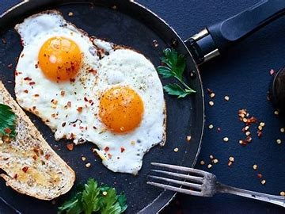

Fried Egg

Description
The fried egg is a simple, delicious breakfast item, but it can be eaten anytime. This recipe will focus on making a traditional
breakfast, with the perfect fried egg and a side of toast and sausage.
Ingredients
- 2 eggs
- Any cooking oil
- Tablesalt and pepper
- Sausage of choice
- 2 slices of bread
- Shallots (green onion stem)
- Pan with lid, skillet
- Spatula (or cooking utensil with a flat, broad surface)
Steps
- If you're using franks for sausages, make diagonal slits on both sides of the sausage. If your sausages have
casing, don't do this as the casing will partially shrivel off the sausage causing some parts will be unevenly cooked.
- Pour oil so that it covers the entire pan in a thin layer, then heat it on medium high heat. At the same time, heat your
skillet on medium heat.
- While the oil is heating, thinly slice your shallots. The oil is hot enough when small bubbles start to form. If
smoke starts to form, lower the heat.
- Grab your two eggs and crack them onto the pan. As soon as you crack the egg, lift your hands away from the pan to avoid
potential oil drops.
- Apply a pinch of salt to each egg yolk evenly. Sprinkle light black pepper evenly onto the eggs.
- Now, place your sausage(s) onto the skillet slit side down. After, start your toast. You can use any method to toast your bread, but its up to you to keep
an eye on it!
- Wait until the edges of the egg white start to brown/crisp. Once this happens, put your pan lid on the eggs and remove them from the heat.
The residual heat and the lid will fully cook the yolk.
- Check your sausage. If one side is medium to dark browned, flip it with the spatula. After you flip it, you can tell your sausage is done when the other
side reaches the same color. For cased sausages, gently press down on the sausage with a spoon. If an indent forms, it's not ready on that side.
- Once your sausages are done, your eggs and toast should be done too. Use your spatula to plate your eggs and sausage. Sprinkle your shallots over your fried
egg for a fresh, vibrant garnish.
- Plate your toast. Your fried egg breakfast is ready for you to enjoy with a drink of your choice.